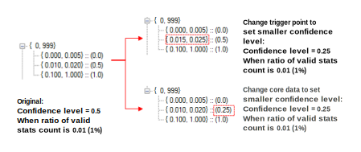

| AWB scene analyzers | |
The advanced gray world scene analyzer (SA AGW) uses information from each stats filter module to compute an AWB decision point and confidence level. This SA AGW data becomes one more SA decision point that the Decision Aggregator merges, along with all the generalized SA data, to make the final AWB decision.
The confidence level indicates how much AGW SA has confidence in its decision. A high confidence level, such as 1.0, means that there are enough valid stats for AGW SA to accurately estimate the target point. AGW SA uses the AWB common trigger system to tune the confidence level. It has a fixed 2-level trigger Trigger control type: 1st level= lux index, 2nd level = number of valid stats ratio. The core data is the assigned confidence level for the applicable trigger set.
If you decrease the AGW SA confidence level, the decision aggregator reduces the weight of the AGW SA decision point in the process of interpolating the decision point with each SA’s decision point. If you see an AWB inconsistency issue caused by a fluctuation of AGW SAa decision point with very small valid stats count, decrease AGW SA confidence level the image below, to reduce the influence of AGW SA decision point while DA computes final decision point.
